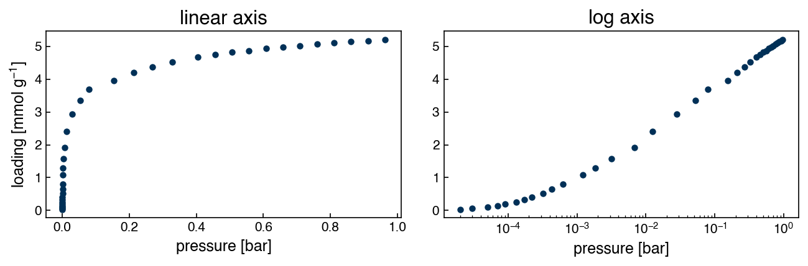
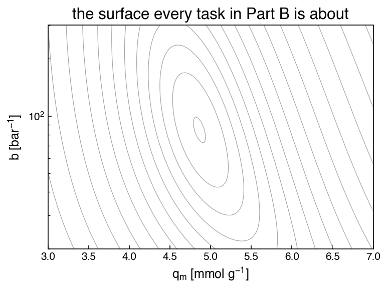

Problems: Numerical Optimization#
Get this problem set
Download everything (Topic1.4-Numerical_Optimization_Problems.zip) — the notebook and
co2_isotherm_13x_298K.csv, in a folder that is ready to run as-is.
The Download badge at the top of the page will also give you the notebook on its own. On Vocareum everything is already set up for you.
Before you start
This problem set accompanies Numerical Optimization. It is worth 100 points:
Part A — Skill Checks (30 pts) — short answers, auto-graded, resubmit as often as you like until they pass.
Part B — Visualization (35 pts) — plots plus written interpretation, peer graded.
Part C — Open Ended (35 pts) — one synthesis problem, peer graded.
The parts build on each other: Part A works out the syntax you need for Part B, and Part B produces the evidence you argue from in Part C. Do them in order.
Setup#
The chapter fit a sum of Gaussians to an infrared spectrum. Here the model is a Langmuir adsorption isotherm, and the data is a measurement of how much CO₂ a zeolite holds as the gas pressure rises.
Zeolite 13X is the benchmark sorbent for CO₂ capture: a crystalline aluminosilicate whose pores hold CO₂ far more strongly than N₂, which is what makes post-combustion separation possible at all. The isotherm below was measured at 298 K and digitized into the NIST/ARPA-E Adsorption Database from Yang et al., Adsorption 26, 1305 (2020), doi:10.1007/s10450-020-00296-3.
The Langmuir model assumes a fixed number of identical adsorption sites, each either empty or holding one molecule:
Two parameters, both physically meaningful. \(q_m\) is the saturation loading in mmol/g — how much the material holds once every site is full — and \(b\) is the affinity constant in bar⁻¹, which sets how quickly it fills. At low pressure \(bP \ll 1\) and the isotherm is nearly a straight line of slope \(q_m b\); at high pressure it flattens at \(q_m\). This is the whole problem set: two parameters that live on completely different scales, in a model that is not linear in either of them.
This set needs autograd, exactly as the chapter does. Run this once if you do not have
it:
!pip install autograd
%matplotlib inline
import autograd.numpy as np # a drop-in replacement, as in the chapter
from autograd import grad, hessian
import pandas as pd
import matplotlib.pyplot as plt
try:
plt.style.use('../settings/plot_style.mplstyle') # available inside the book
except OSError:
pass # downloaded notebook: use defaults
df = pd.read_csv('data/co2_isotherm_13x_298K.csv')
P = df['pressure [bar]'].values
Q = df['loading [mmol/g]'].values
print(f"{len(P)} points; P = {P.min():.1e} to {P.max():.4f} bar; "
f"q = {Q.min():.4f} to {Q.max():.3f} mmol/g")
35 points; P = 2.0e-05 to 0.9629 bar; q = 0.0373 to 5.196 mmol/g
The pressures span nearly five decades, so every plot of the isotherm itself wants a logarithmic pressure axis. On a linear axis two thirds of the measurements pile up against the left edge.
fig, (ax1, ax2) = plt.subplots(1, 2, figsize=(9, 3.2))
ax1.plot(P, Q, 'o', ms=4)
ax1.set_xlabel('pressure [bar]')
ax1.set_ylabel('loading [mmol g$^{-1}$]')
ax1.set_title('linear axis')
ax2.semilogx(P, Q, 'o', ms=4)
ax2.set_xlabel('pressure [bar]')
ax2.set_title('log axis')
plt.tight_layout();

Run this once. It defines the check helper used after each Part A answer. It will
not run inside the book — use the downloaded notebook.
# Run this once. It defines `check`, used after each Part A answer below.
import hashlib
_EXPECTED = {
'q1': (4, ['169d073b8ac8', '071dfcbba161', 'fdbb2c44676d', '04ff40ff6ae9', 'f51cf1b3beb5', '409b57cd5c5d', '743e55710c19', '125ea834e92b', '9df62094f6be', 'a710098349c2', '53d876e4a777', '20fa38593026', '4377fb02a3f1']),
'q2': (3, ['969327c99e19', 'a1e4593b21fd', 'd00367ce8982', 'c5f98ac682b0', 'bbe420df909d', 'ede4b6829e38', '74471c58c19d']),
'q3': (4, ['8a8d1d835236', '08a9e2dfca87', '2468af0552a0', '2cb5ff75daf4', '20b29d7c2521', '3236770c0897', '98930a3d2c61', 'a55e4bef86ad', '50d16e3878a2', 'c71e5032ab39', 'c34755801579']),
}
def check(qid, value):
"""Compare an answer against a stored digest. Practice only -- nothing is recorded."""
places, digests = _EXPECTED[qid]
if value is Ellipsis:
print(f"{qid}: not answered yet")
return
got = hashlib.sha256(f"{float(value):.{places}f}".encode()).hexdigest()[:12]
print(f"{qid}: {'correct' if got in digests else 'not the expected value'}")
Part A — Skill Checks (30 pts)#
Three questions, 10 points each. Each asks you to assign a single number to a named variable. Run the check cell after each one; there is no limit on attempts.
A1. Get a starting guess for free (10 pts)#
Exercise 1
The Langmuir equation is not linear in \(q_m\) or \(b\), but it can be rearranged until it is linear in something. Divide both sides into \(P\):
So plotting \(P/q\) against \(P\) should give a straight line whose slope is \(1/q_m\) and whose intercept is \(1/(q_m b)\). That is an ordinary linear least-squares problem of exactly the kind Linear Regression solves.
Build the two-column design matrix \(\bar{\bar{X}}\) — a column of ones for the intercept
and a column of \(P\) for the slope — and solve the normal equations
\(\bar{\bar{X}}^T\bar{\bar{X}}\vec{w} = \bar{\bar{X}}^T\vec{y}\) with np.linalg.solve,
where \(\vec{y}\) is \(P/q\). Use all 35 points.
Assign the saturation loading \(q_m = 1/\text{slope}\), in mmol/g, to q_m_linear.
# YOUR CODE HERE
q_m_linear = ...
check("q1", q_m_linear)
A2. Write the objective and differentiate it (10 pts)#
Exercise 2
Now set up the real problem. Pack the parameters into a single vector \(\vec{\lambda} = [q_m,\, b]\) and write the plain sum of squared errors:
Note this is the plain sum — do not divide by the number of points, as the chapter’s
gaussian_loss did. Write it as a function of one argument, as the chapter does, so
autograd can differentiate it, then get the gradient function with grad.
Every part of this problem set starts from the same round-number guess:
Assign the norm of the gradient at \(\vec{\lambda}_0\), via np.linalg.norm, to
grad_norm_init.
# YOUR CODE HERE
grad_norm_init = ...
check("q2", grad_norm_init)
A3. Hand it to a real optimizer (10 pts)#
Exercise 3
Pass the same objective and the same starting guess \(\vec{\lambda}_0\) to
scipy.optimize.minimize with method='BFGS' and default settings, exactly as the
chapter does.
Assign the sum of squared errors at the optimum to sse_bfgs.
# YOUR CODE HERE
sse_bfgs = ...
check("q3", sse_bfgs)
Part B — Visualization (35 pts)#
BFGS got there in a handful of iterations. Now do it yourself, with the chapter’s own gradient descent, and find out what that costs.
Everything in this part is a picture of the same two-dimensional surface: the SSE as a function of \((q_m, b)\). Use this helper to draw it — it is provided so that everyone’s figures are comparable, and so the work goes into the optimization rather than into matplotlib.
def sse_surface(qm_range=(3.0, 7.0), b_range=(20.0, 300.0), n=120):
"""SSE on a grid of (q_m, b). Returns meshgrids QM, B and the SSE values Z."""
qm = np.linspace(qm_range[0], qm_range[1], n)
b = np.logspace(np.log10(b_range[0]), np.log10(b_range[1]), n)
QM, B = np.meshgrid(qm, b)
pred = QM[:, :, None] * B[:, :, None] * P[None, None, :] \
/ (1 + B[:, :, None] * P[None, None, :])
Z = np.sum((pred - Q[None, None, :]) ** 2, axis=2)
return QM, B, Z
def plot_landscape(ax, qm_range=(3.0, 7.0), b_range=(20.0, 300.0),
logy=True, levels=None, n=120):
"""Contour the SSE surface onto `ax`. Returns the contour set."""
QM, B, Z = sse_surface(qm_range, b_range, n)
if levels is None:
levels = np.logspace(np.log10(4.4), np.log10(200), 16)
cs = ax.contour(QM, B, Z, levels=levels, colors='0.65', linewidths=0.6)
if logy:
ax.set_yscale('log')
ax.set_xlabel('$q_m$ [mmol g$^{-1}$]')
ax.set_ylabel('$b$ [bar$^{-1}$]')
return cs
fig, ax = plt.subplots(figsize=(5.5, 4.2))
plot_landscape(ax)
ax.set_title('the surface every task in Part B is about')
plt.tight_layout();

Exercise 4
Write the chapter’s fixed-step gradient descent: repeatedly replace
\(\vec{\lambda} \leftarrow \vec{\lambda} - h\,\nabla g(\vec{\lambda})\) for a fixed
1,000 iterations, the same N_iter the chapter uses. Unlike the chapter’s loop, keep
the whole history — every task below plots it.
1. Where the descent actually goes. Run it from \(\vec{\lambda}_0 = [5.0,\, 65.0]\) at
\(h = 10^{-5}\), \(10^{-3}\) and \(10^{-1}\). Plot all three trajectories on the contour map
with plot_landscape, marking the start and the A3 optimum. Beside the figure, give a
short table: final SSE, and the fraction of the required change each parameter achieved,
for \(j = q_m\) and \(j = b\), using your A3 optimum as \(\lambda^{\text{opt}}\).
Guard against overflow
At the largest step size the SSE overflows within a few iterations. Break out of the loop
when the SSE stops being finite or exceeds, say, \(10^{12}\), and record the iteration at
which that happened — otherwise you will spend the rest of the run propagating inf and
nan, and nothing will plot.
Note
When plotting the trajectories, set the axis limits explicitly to the suggested
plot_landscape range (i.e., qm_range=(3.0, 7.0)) — otherwise the contour-map domain
will be dominated by the diverged direction.
2. Two views of the same failure. A two-panel figure: SSE against iteration on a logarithmic \(y\) axis for all three step sizes, with a horizontal reference line at your A3 optimum; and beside it \(q_m\) and \(b\) against iteration (two panels or twin axes), each with a horizontal line at its optimal value. One of those parameter traces will be visibly flat.
3. Does the starting guess matter? Re-run at \(h = 10^{-5}\) and \(10^{-3}\) from
\([5.0,\; 0.65]\) — the affinity constant 100× too small, and
\([500,\; 6500]\) — both parameters 100× too large,
and plot these trajectories on the contour map as well. You will need wider axis ranges to see the second one; say what you chose. Report the final SSE each run reaches.
4. The shape of the valley. The surface has a direction that is steep and a direction
that is flat, and the ratio is what defeated task 1. Measure it. The matrix of second
derivatives — the Hessian — is available from autograd exactly as the gradient was:
H = hessian(sse)(lam_opt)
Take its eigenvalues and eigenvectors with np.linalg.eigh. Each eigenvector points along
a principal direction of the surface, and moving a distance \(1/\sqrt{\lambda_i}\) along it
raises the SSE by the same amount in every direction — so those distances measure how far
you can travel before the fit degrades.
Plot a zoomed contour map near the optimum on a linear \(b\) axis (the Hessian is a local statement, so zoom in until the contours look like ellipses), and draw both eigenvector directions as arrows of length \(1/\sqrt{\lambda_i}\) from the optimum.
Report the two arrow lengths and their ratio, then in one or two sentences say why no single step size could have worked in task 1.
Label your axes with units.
# YOUR CODE HERE
fig, ax = plt.subplots()
Part C — Open Ended (35 pts)#
Part B measured the problem: the loss surface is a long narrow valley, and the ratio of its two curvatures — the condition number of the Hessian, \(\lambda_{\max}/\lambda_{\min}\) — is what a single step size cannot cope with. You met condition numbers in Linear Algebra, where a large one meant a linear solve had lost its accuracy; here it has a shape.
There are two completely different things you can change about a fitting problem, and this part is about telling them apart:
the parameterization — the coordinates you search in, and
the model and the loss — what you are fitting and what counts as a good fit.
One of them moves the answer. The other does not.
Exercise 5
1. Change the coordinates. Your two fitted parameters differ by more than an order of magnitude and both must stay positive, and both problems go away if you search in the logarithms instead. Define \(\vec{z} = [\ln q_m,\, \ln b]\), write an objective that takes \(\vec z\), exponentiates it, and returns the same SSE, then run the same gradient descent, at the same three step sizes, for the same 1,000 iterations from \(\vec{z}_0 = \ln\vec{\lambda}_0\).
Report the same quantities as Part B task 1, remembering to exponentiate before quoting
\(q_m\) and \(b\), and report np.linalg.cond(H) for the Hessian in both parameterizations.
Plot the log-parameter trajectories on the contour map alongside the raw ones from Part B —
on the same \((q_m, b)\) axes, so the two are comparable.
2. Change the model. Langmuir assumes every adsorption site is identical, which for a real zeolite is optimistic. Pick at least one other isotherm model, fit it to the same data, and plot it against the Langmuir fit. Some standard choices, all fittable with what you already have:
model |
\(q(P)\) |
parameters |
|---|---|---|
Freundlich |
\(K P^{n}\) |
\(K, n\) |
Sips |
\(q_m (bP)^{t} / \left[1 + (bP)^{t}\right]\) |
\(q_m, b, t\) |
Tóth |
\(q_m b P / \left[1 + (bP)^{t}\right]^{1/t}\) |
\(q_m, b, t\) |
dual-site Langmuir |
\(\dfrac{q_1 b_1 P}{1 + b_1 P} + \dfrac{q_2 b_2 P}{1 + b_2 P}\) |
\(q_1, b_1, q_2, b_2\) |
Fit in log parameters — you have just seen why. For each model you try, report the SSE and
np.linalg.cond(H) at its optimum, and say in one sentence what the extra freedom bought.
Note
The Tóth model comes back in Nonlinear Parameter Estimation, where the question becomes how certain its parameters are. You are welcome to use it here.
3. Change the loss. Everything so far has minimized the plain sum of squared errors in \(q\). That is a choice. Compare at least three different loss functions on the same model, on two axes — the quality of the fit they produce, and how numerically well behaved they are. Required: the plain SSE in \(q\); the SSE of the log-transformed residuals,
and the loss for whichever model you chose in task 2. Others you may add: the mean squared error, or an SSE with a soft penalty added as the chapter describes.
For each loss, report where it lands (the fitted parameters), the plain SSE evaluated at
that optimum so the comparison is on one scale, and np.linalg.cond(H).
4. Two numbers, then one or two sentences. Report the condition-number improvement from task 1, and the largest difference in fitted \(q_m\) between any two of your task-3 losses.
Then, in one or two sentences: which of the three changes altered where the optimum is, and which only altered how hard it was to get there?
# YOUR CODE HERE